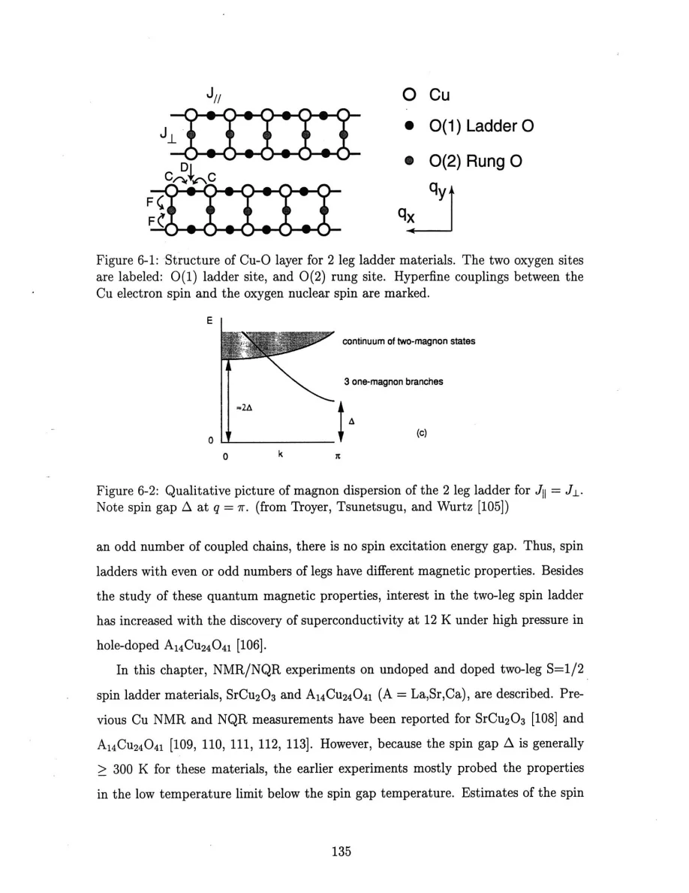
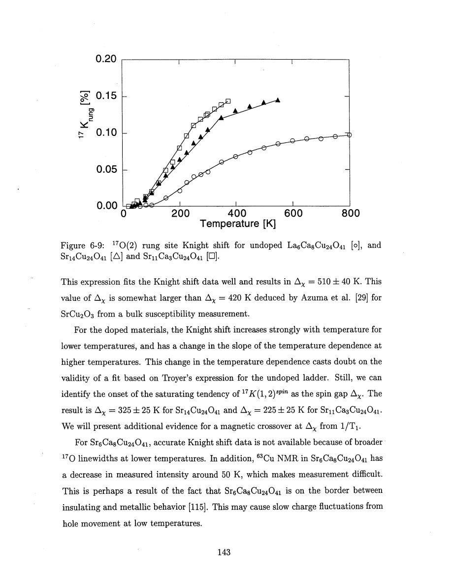
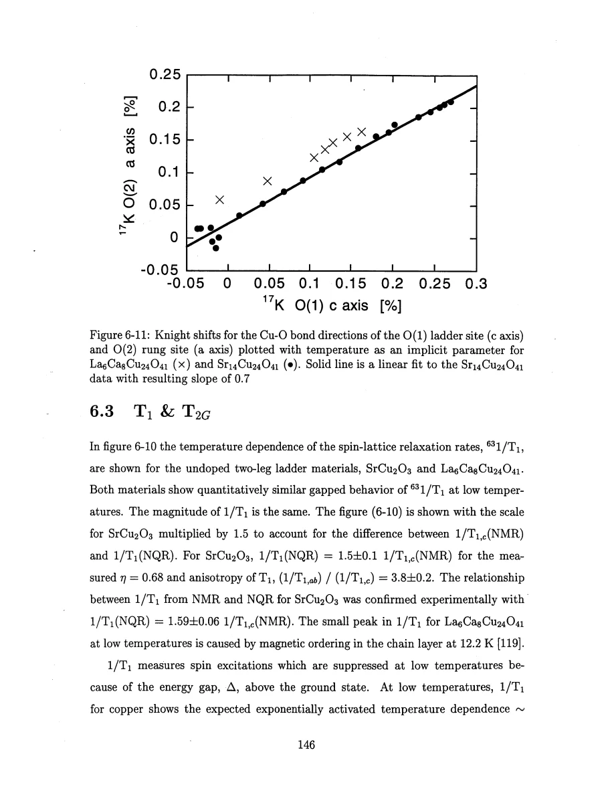
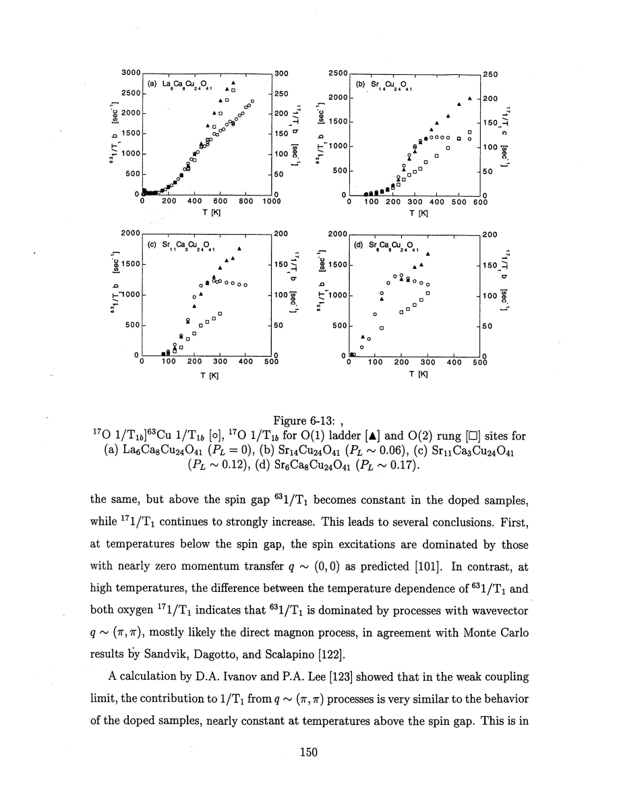

Thurber · supplied source 1999 · chapter unit
Two-leg ladders: gaps, exchange ratios and changing channels
Combine local susceptibility, site-filtered rates and correlation saturation; a single low-temperature activation fit is insufficient.
The question: Which measurements distinguish a spin-gapped ladder from a chain and locate the crossover above the gap?
Before you start: the terms you need
- Spin-1/2 Heisenberg antiferromagnet: neighboring electron spins interact through J Sᵢ·Sⱼ with J>0.
- Hyperfine coupling: the electronic spin polarization produces a local magnetic field at a nucleus.
- Wave vector q: distinguishes uniform spin fluctuations near q=0 from staggered fluctuations near the antiferromagnetic vector Q.
- Correlation length ξ: a distance over which staggered electron-spin correlations remain appreciable.
- NMR/NQR: applied-field magnetic resonance versus resonance in the electric field gradient with no applied static field.
- Historical scope: these are experiments and interpretations reported in the supplied 1999 thesis, not a current review of quantum-spin transport.
See → explain → check
Follow the idea in 3 pictures.
Picture 1 / 3
Legs and rungs are distinct exchange paths
Look for: Locate Cu sites, leg bonds, rung bonds and the two oxygen positions.
Swipe across the picture to read every label, or enlarge it below.
- Cu
- Leg bond J∥
- Rung bond J⊥
- Leg O / rung O
Teaching schematic. Ideal two-leg exchange network. The source estimate J⊥/J∥≈0.5 comes from oxygen-shift and superexchange assumptions, not a measured bond width.
The ladder supplies two useful oxygen momentum filters.
Check the original: PDF p. 134 · PDF p. 135 · PDF p. 137
Picture 2 / 3
Suppressed magnetic excitations rise thermally
Look for: The toy activated curve falls toward zero on cooling and rises with thermal population.
Swipe across the picture to read every label, or enlarge it below.
- Thermally activated response
Teaching schematic. Normalized teaching curve exp(−Δ/kBT), not fitted data and not the full T⁻¹ᐟ² susceptibility prefactor. The actual crossover is source and sample dependent.
A gap suppresses low-energy relaxation but does not eliminate ground-state spatial correlations.
Check the original: PDF p. 138 · PDF p. 143 · PDF p. 146 · PDF p. 147
Picture 3 / 3
Normalized rates separate above the gap scale
Look for: Copper and oxygen share the low-T trend, then weight different high-T channels.
Swipe across the picture to read every label, or enlarge it below.
- Below crossover
- Doped high-T regime
- Undoped high-T regime
Teaching schematic. Measured trend comparison from the thesis. The doped–undoped contrast remains theoretically unresolved there.
The high-T Cu/O contrast is evidence for momentum redistribution.
Check the original: PDF p. 149 · PDF p. 150 · PDF p. 151
Explain it back.
Try answering aloud before opening the explanation.
Does an unchanged neutron spectral peak contradict a larger low-energy NMR rate?
Not necessarily. Additional weight can appear below the peak, affecting NMR strongly while a higher-energy peak position changes little. Temperature and background also differ between probes.
Why does a shift slope 0.7 lead to an exchange ratio near 0.5 in this analysis?
The shift slope estimates a transferred-spin-density ratio, while the simple superexchange model scales as that density squared. The inference retains its orbital assumptions.
Go deeper Follow the full argument
An even rung changes the quantum ground state
A two-leg ladder combines antiferromagnetic leg exchange J∥ and rung exchange J⊥. In the strong-rung limit each pair of spin-1/2 moments forms a singlet, with a finite cost to excite it. The gapped singlet phase persists beyond that limiting picture, so an exact product of rung singlets is not needed. SrCu₂O₃ provides the simpler undoped structure. The A₁₄Cu₂₄O₄₁ family also contains a separate CuO₂ chain layer, allowing hole redistribution and requiring nuclear-site resolution. La₆Ca₈Cu₂₄O₄₁ is nominally undoped, while Sr-based compositions have holes. The bulk susceptibility can be dominated by chains with a smaller exchange scale; the oxygen Knight shift measured at ladder sites therefore supplies a more specific ladder susceptibility. The thesis fits an undoped low-temperature form T⁻¹ᐟ² exp(−Δχ/kBT) and notes limitations when the doped shift changes slope or broadens.
PDF p. 134 · PDF p. 135 · PDF p. 136 · PDF p. 137 · PDF p. 138 · PDF p. 139 · PDF p. 143
Use crossover and relative oxygen shifts as separate constraints
Extending copper T₁ to high temperatures reveals the transition from thermally suppressed rates to a paramagnetic regime. Undoped SrCu₂O₃ and La₆Ca₈Cu₂₄O₄₁ behave similarly after the NMR/NQR convention correction; the relaxation crossover is around 425±25 K. Doped Sr₁₄, Sr₁₁Ca₃ and Sr₆Ca₈ compounds give lower characteristic scales, approximately 325, 225 and 160 K with quoted uncertainties around 25 K. These are operational NMR crossover scales and should not be silently equated to every definition of a neutron gap. The relative temperature-dependent oxygen shifts provide another estimate: comparing rung and leg bond directions gives a slope around 0.7. With the superexchange argument J∝fσ² and shift proportional to transferred oxygen spin density fσ, the thesis infers J⊥/J∥≈0.5. That inference assumes sufficiently comparable orbital and electronic energy factors along the two paths.
PDF p. 143 · PDF p. 144 · PDF p. 145 · PDF p. 146 · PDF p. 147 · PDF p. 148
Copper and oxygen identify changing scattering channels
Rung oxygen suppresses fluctuations staggered across the rung; leg oxygen suppresses the leg-staggered channel but has a smaller extra coupling to a neighboring ladder. Copper retains a stronger staggered weight. At low temperatures, normalized copper and oxygen rates track one another, consistent with a low-momentum-transfer thermally activated process. Above the crossover in doped samples, copper becomes nearly constant while both oxygen rates keep increasing, indicating a changed momentum balance rather than all fluctuations simply disappearing. The undoped copper rate instead continues approximately linearly with temperature; the thesis leaves this contrast unresolved. A neutron peak staying near its original energy can coexist with an increased low-energy NMR response if doping transfers spectral weight below it. The thesis invokes published Zn-doped SrCu₂O₃ work as an example of weakened gap-peak weight; it does not present Zn doping as the same perturbation as mobile ladder holes. Gaussian rates saturate at low temperature, consistent with finite ξ, but conversion factors and linewidth limitations prevent every material from supplying equally direct comparisons. These multiple checks are stronger than treating an activation slope as the whole story.
PDF p. 147 · PDF p. 149 · PDF p. 150 · PDF p. 151 · PDF p. 152 · PDF p. 153
Translate the mathematics Essential equations and their meaning
χL(T)∝T^(−1/2) exp[−Δχ/(kBT)]
Symbols: χL: undoped ladder uniform susceptibility; Δχ: gap parameter in the susceptibility fit.
Low-temperature ladder expression. Doped slope changes and line broadening limit applying the undoped fit unchanged.
J⊥/J∥≈[dK_rung/dK_leg]²≈(0.7)²≈0.5
Symbols: K: spin-shift variations along the corresponding Cu–O bonds; J⊥,J∥: rung and leg exchange energies.
Derived estimate using proportional spin transfer and comparable superexchange factors. Chemical offsets cancel in the slope, but orbital assumptions do not.
R₁∝exp[−Δ/(kBT)] for T well below the spin-gap scale
Symbols: R₁: magnetic ladder relaxation rate; Δ: activation energy in the applicable channel.
Leading suppression, not a justification for equating all NMR crossover, susceptibility and neutron-gap definitions.
Read the evidence Guided original source pages

PDF p. 135

PDF p. 143

PDF p. 146

PDF p. 150
What the evidence supports—and where it stops
- The rung-singlet drawing is a limiting explanation, not the exact full wave function at every J⊥/J∥.
- NMR crossover scales and neutron peak energies need not be identical measures of a gap.
- Doped-versus-undoped high-T copper relaxation is left unexplained in the thesis.
- Some T₂G comparisons are limited by broad lines, excitation bandwidth and imperfect NQR/NMR conversion.
Source version, reading coverage and preservation
Read all extracted substantive text on one-based PDF pages 14–204, including chapters 1–8 and appendices A–C; checked the title and abstract and visually inspected 66 full rendered pages for cited figures, formulas, tensor conventions and extraction ambiguities. PDF page numbers match the printed body page numbers.
Reviewed body pages: 14, 15, 16, 17, 18, 19, 20, 21, 22, 23, 24, 25, 26, 27, 28, 29, 30, 31, 32, 33, 34, 35, 36, 37, 38, 39, 40, 41, 42, 43, 44, 45, 46, 47, 48, 49, 50, 51, 52, 53, 54, 55, 56, 57, 58, 59, 60, 61, 62, 63, 64, 65, 66, 67, 68, 69, 70, 71, 72, 73, 74, 75, 76, 77, 78, 79, 80, 81, 82, 83, 84, 85, 86, 87, 88, 89, 90, 91, 92, 93, 94, 95, 96, 97, 98, 99, 100, 101, 102, 103, 104, 105, 106, 107, 108, 109, 110, 111, 112, 113, 114, 115, 116, 117, 118, 119, 120, 121, 122, 123, 124, 125, 126, 127, 128, 129, 130, 131, 132, 133, 134, 135, 136, 137, 138, 139, 140, 141, 142, 143, 144, 145, 146, 147, 148, 149, 150, 151, 152, 153, 154, 155, 156, 157, 158, 159, 160, 161, 162, 163, 164, 165, 166, 167, 168, 169, 170, 171, 172, 173, 174, 175, 176, 177, 178, 179, 180, 181, 182, 183, 184, 185, 186, 187, 188, 189, 190, 191, 192, 193, 194, 195, 196, 197, 198, 199, 200, 201, 202, 203, 204. Bibliography pages 205–212 were not independently verified against the cited external works. The guide explains final results and assumptions rather than reproducing every algebraic step, electronics part number or data point. Remaining rendered pages not listed in the private review were not claimed as visually read.
Source SHA-256: aca6c34f95675f0fb188d45f9148bacce2e832f0956949025eae42f1e1abf618. Original file bytes preserved locally, and in this room’s original download.
Thesis - Thurber - 1999 - O and Cu NMR spin dynamics in low dimensional antiferromagnets.pdf